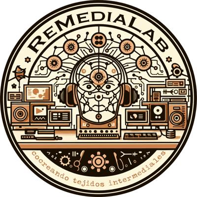

La pluralidad
de la escucha
28 de sep - 1 de oct del 2026
Lugar:
Facultad de Artes de la Pontificia Universidad Javeriana
Edificio Gerardo Arango S. J.
Cra. 7 #40 - 62, Bogotá, Colombia

La exposición Ejercicios de empatía: salida interior, realizada como parte de la Trienal de Arte de Universidades Católicas, y el evento La pluralidad de la escucha. Re:Mediaciones + 3 Congreso Colombiano de Bioacústica y Ecoacústica comparten la participación de artistas cuyas prácticas movilizan otras formas de percibir, relacionarnos y habitar el mundo. El propósito de tender este puente es crear un espacio de confluencia entre dos propuestas que, aunque responden a marcos curatoriales y metodológicos diferentes, apelan a la escucha, la atención a los territorios y quienes los habitan, y la exploración de otras formas de relación y existencia.
La segunda edición de Re:Mediaciones – Encuentro de Artes Electrónicas y del Cuerpo, en diálogo con el III Congreso de Bioacústica y Ecoacústica (septiembre–octubre de 2026), se propone reunir diversas reflexiones sobre las prácticas de la escucha. Esta sinergia busca desbordar el campo científico para integrar disciplinas como el arte, la comunicación y las ciencias sociales, explorando aquellas escuchas latentes en la experiencia individual y colectiva del día a día. Tradicionalmente, la Bioacústica y la Ecoacústica se han dedicado a comprender la comunicación de las especies y las circunstancias acústicas de un entorno, clasificando los fenómenos sonoros en biofonías, antropofonías y geofonías (Krause, 2012).
Sin embargo, desde la Facultad de Artes invitamos a aproximarnos a la escucha como un espacio de mediación para el reconocimiento de lo «otro»: de otras especies, de otros paisajes, de otras comunidades humanas y de otras expresiones tecnológicas. En ese sentido, el objetivo de este encuentro consiste en convocar múltiples disciplinas y experiencias que se reúnan en torno a la Acustemología (narración de lo escuchado), la grabación de campo (en las diversas disciplinas donde se emplea: ciencia, arte, comunicación, cine…), la escucha afectiva (como aquella que también se produce en diversas disciplinas y que extiende puentes a partir de la empatía con los entornos) y la escucha fenomenológica (como una que se pregunta por su experiencia sensorial).
Selección de obras en el marco de Re:mediaciones en diálogo con el 3 Congreso de Bioacústica y Ecoacústica:
Jorge Barco, Oscar Laverde, Luisa Roa, Alejandro Castillejo.
Equipo Re:Mediaciones.
Producción: Enrico Mandiola.
Apoyo de coordinación: Raquel Solórzano.